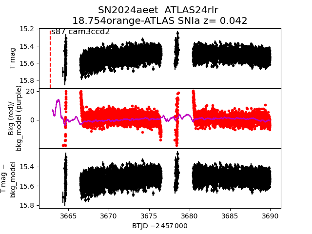
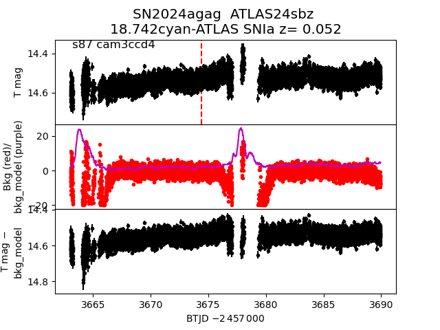
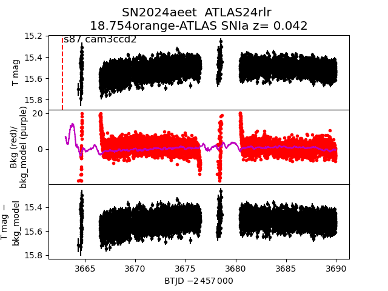
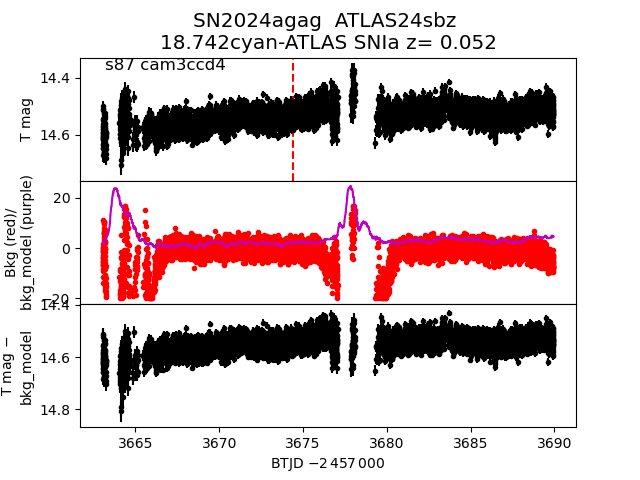
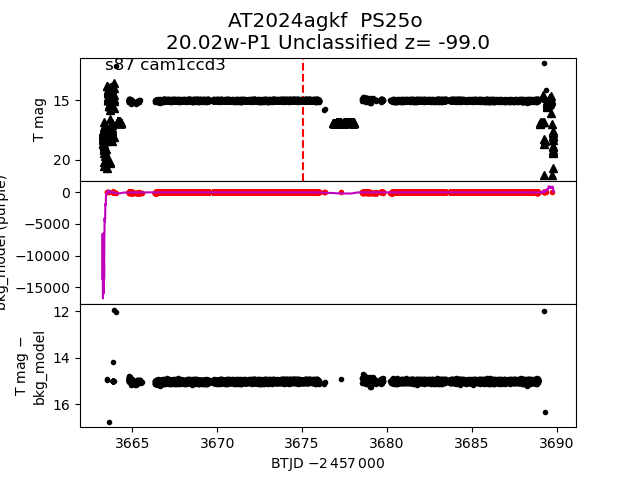
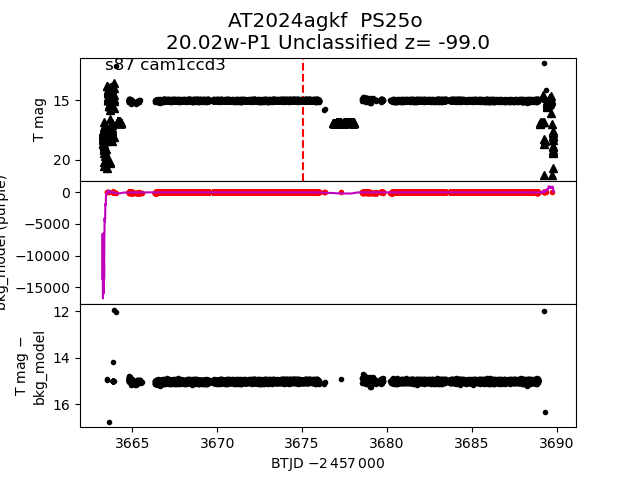
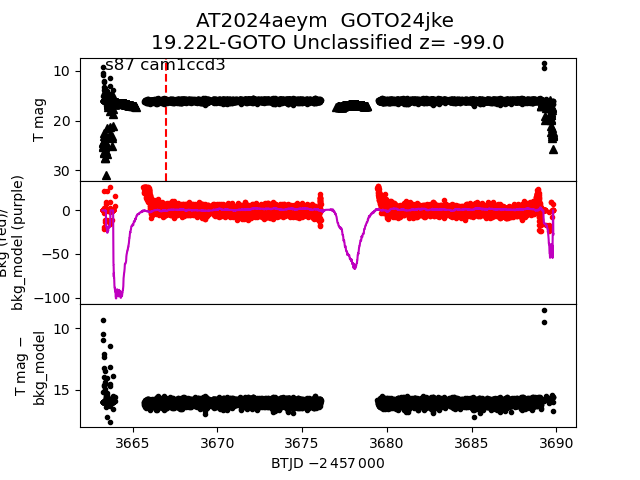
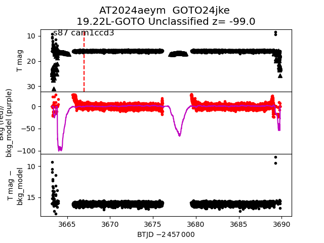

all transients in sector87 (74 total)
Each figure has three panels. The top panel shows the transient light curve, the middle panel shows the local background (estimated in an annulus), and the bottom panel shows a "background-model corrected" light curve. Details about the background model are in the README.
The vertical red line marks the time of discovery reported to TNS. Other useful metadata from TNS is in the figure title.
Note that the top and bottom panel are in magnitudes, while the middle panel is in differential flux units. The magnitudes are calibrated to the flux in the reference image used for image subtraction. Thus, flux from the host galaxy is included in these magnitudes.
3-sigma upper limits are plotted as triangles with no errorbars. A typical limiting magnitude is 19.6 in 30 minutes or 18.4 in 200 seconds (for low backgrounds).
The links allow you to download the light curve data as a text file.
More details in the README.
2024aekl
2024agoe
2024aevk
2025dz
2024aeqk
2025lw
2024aeib
2024aggw
 2025G
2025oo
2025lm
2025hp
2024afyo
2024aeml
2024adzy
2025kd
2024afxc
2024agbv
2024afys
2024aeyi
2024aexl
2024aebk
2024afkp
2024aeow
2024aeet

2024aeid
2024agag

2024aeom
2024agmh
2025iz
2024aevh
2024agcv
2025jq
2025G
2025oo
2025lm
2025hp
2024afyo
2024aeml
2024adzy
2025kd
2024afxc
2024agbv
2024afys
2024aeyi
2024aexl
2024aebk
2024afkp
2024aeow
2024aeet

2024aeid
2024agag

2024aeom
2024agmh
2025iz
2024aevh
2024agcv
2025jq
 2025is
2024aeyl
2025ik
2024aggz
2025ke
2024aeyt
2024aecl
2024aeyk
2025kz
2025px
2025ao
2024aerm
2025hq
2024aeqp
2025ll
2025is
2024aeyl
2025ik
2024aggz
2025ke
2024aeyt
2024aecl
2024aeyk
2025kz
2025px
2025ao
2024aerm
2025hq
2024aeqp
2025ll
 2024aeyb
2025hn
2025qn
2024agkf

2025bw
2024aeyg
2025kv
2024agbg
2024aeyb
2025hn
2025qn
2024agkf

2025bw
2024aeyg
2025kv
2024agbg
 2024afjr
2025ea
2024aeym

2024aemk
2024afec
2025qr
2024afxr
2025cx
2024aevi
2025jy
2024aebo
2024aekk
2024agiq
2024aevs
2024aern
2025al
2024agki
2024agrs
2024afjr
2025ea
2024aeym

2024aemk
2024afec
2025qr
2024afxr
2025cx
2024aevi
2025jy
2024aebo
2024aekk
2024agiq
2024aevs
2024aern
2025al
2024agki
2024agrs